6 Linear Model Selection and Regularization
6.1 Conceptual
6.1.1 Question 1
We perform best subset, forward stepwise, and backward stepwise selection on a single data set. For each approach, we obtain \(p + 1\) models, containing \(0, 1, 2, ..., p\) predictors. Explain your answers:
- Which of the three models with \(k\) predictors has the smallest training RSS?
Best subset considers the most models (all possible combinations of \(p\) predictors are considered), therefore this will give the smallest training RSS (it will at least consider all possibilities covered by forward and backward stepwise selection). However, all three approaches are expected to give similar if not identical results in practice.
- Which of the three models with \(k\) predictors has the smallest test RSS?
We cannot tell which model will perform best on the test RSS. The answer will depend on the tradeoff between fitting to the data and overfitting.
- True or False:
- The predictors in the \(k\)-variable model identified by forward stepwise are a subset of the predictors in the (\(k+1\))-variable model identified by forward stepwise selection.
True. Forward stepwise selection retains all features identified in previous models as \(k\) is increased.
- The predictors in the \(k\)-variable model identified by backward stepwise are a subset of the predictors in the \((k+1)\)-variable model identified by backward stepwise selection.
True. Backward stepwise selection removes features one by one as \(k\) is decreased.
- The predictors in the \(k\)-variable model identified by backward stepwise are a subset of the predictors in the \((k+1)\)-variable model identified by forward stepwise selection.
False. Forward and backward stepwise selection can identify different combinations of variables due to differing algorithms.
- The predictors in the \(k\)-variable model identified by forward stepwise are a subset of the predictors in the \((k+1)\)-variable model identified by backward stepwise selection.
False. Forward and backward stepwise selection can identify different combinations of variables due to differing algorithms.
- The predictors in the \(k\)-variable model identified by best subset are a subset of the predictors in the \((k+1)\)-variable model identified by best subset selection.
False. Best subset selection can identify different combinations of variables for each \(k\) by considering all possible models.
6.1.2 Question 2
For parts (a) through (c), indicate which of i. through iv. is correct. Justify your answer.
- The lasso, relative to least squares, is:
- More flexible and hence will give improved prediction accuracy when its increase in bias is less than its decrease in variance.
- More flexible and hence will give improved prediction accuracy when its increase in variance is less than its decrease in bias.
- Less flexible and hence will give improved prediction accuracy when its increase in bias is less than its decrease in variance.
- Less flexible and hence will give improved prediction accuracy when its increase in variance is less than its decrease in bias.
- By using shrinkage, lasso can reduce the number of predictors so is less flexible. As a result, it will lead to an increase in bias by approximating the true relationship. We hope that this increase is small but that we dramatically reduce variance (i.e. the difference we would see in the model fit between different sets of training data).
- Repeat (a) for ridge regression relative to least squares.
- The same is true of ridge regression—shrinkage results in a less flexible model and can reduce variance.
- Repeat (a) for non-linear methods relative to least squares.
- Non-linear methods can be more flexible. They can perform better as long as they don’t substantially increase variance.
6.1.3 Question 3
Suppose we estimate the regression coefficients in a linear regression model by minimizing:
\[ \sum_{i=1}^n\left(y_i - \beta_0 - \sum_{j=1}^p\beta_jx_{ij}\right)^2 \textrm{subject to} \sum_{j=1}^p|\beta_j| \le s \]
for a particular value of \(s\). For parts (a) through (e), indicate which of i. through v. is correct. Justify your answer.
- As we increase \(s\) from 0, the training RSS will:
- Increase initially, and then eventually start decreasing in an inverted U shape.
- Decrease initially, and then eventually start increasing in a U shape.
- Steadily increase.
- Steadily decrease.
- Remain constant.
- As \(s\) increases, the model becomes more flexible (the sum of absolute coefficients can be higher). With more flexible models, training RSS will always decrease.
- Repeat (a) for test RSS.
- With more flexible models, test RSS will decrease (as the fit improves) and will then increase due to overfitting (high variance).
- Repeat (a) for variance.
- As \(s\) increases, the model becomes more flexible so variance will increase.
- Repeat (a) for (squared) bias.
- As \(s\) increases, the model becomes more flexible so bias will decrease.
- Repeat (a) for the irreducible error.
- The irreducible error is unchanged.
6.1.4 Question 4
Suppose we estimate the regression coefficients in a linear regression model by minimizing
\[ \sum_{i=1}^n \left(y_i - \beta_0 - \sum_{j=1}^p\beta_jx_{ij}\right)^2 + \lambda\sum_{j=1}^p\beta_j^2 \]
for a particular value of \(\lambda\). For parts (a) through (e), indicate which of i. through v. is correct. Justify your answer.
- As we increase \(\lambda\) from 0, the training RSS will:
- Increase initially, and then eventually start decreasing in an inverted U shape.
- Decrease initially, and then eventually start increasing in a U shape.
- Steadily increase.
- Steadily decrease.
- Remain constant.
- As \(\lambda\) is increased, more weight is placed on the sum of squared coefficients and so the model becomes less flexible. As a result, training RSS must increase.
- Repeat (a) for test RSS.
- As \(\lambda\) increases, flexibility decreases so test RSS will decrease (variance decreases) but will then increase (as bias increases).
- Repeat (a) for variance.
- Steadily decrease.
- Repeat (a) for (squared) bias.
- Steadily increase.
- Repeat (a) for the irreducible error.
- The irreducible error is unchanged.
6.1.5 Question 5
It is well-known that ridge regression tends to give similar coefficient values to correlated variables, whereas the lasso may give quite different coefficient values to correlated variables. We will now explore this property in a very simple setting.
Suppose that \(n = 2, p = 2, x_{11} = x_{12}, x_{21} = x_{22}\). Furthermore, suppose that \(y_1 + y_2 =0\) and \(x_{11} + x_{21} = 0\) and \(x_{12} + x_{22} = 0\), so that the estimate for the intercept in a least squares, ridge regression, or lasso model is zero: \(\hat{\beta}_0 = 0\).
- Write out the ridge regression optimization problem in this setting.
We are trying to minimize:
\[ \sum_{i=1}^n \left(y_i - \beta_0 - \sum_{j=1}^p\beta_jx_{ij}\right)^2 + \lambda\sum_{j=1}^p\beta_j^2 \]
We can ignore \(\beta_0\) and can expand the sums since there’s only two terms. Additionally, we can define \(x_1 = x_{11} = x_{12}\) and \(x_2 = x_{21} = x_{22}\). We then need to minimize
\[\begin{align} f = & (y_1 - \beta_1x_1 - \beta_2x_1)^2 + (y_2 - \beta_1x_2 - \beta_2x_2)^2 + \lambda\beta_1^2 + \lambda\beta_2^2 \\ f = & y_1^2 - 2y_1\beta_1x_1 - 2y_1\beta_2x_1 + \beta_1^2x_1^2 + 2\beta_1\beta_2x_1^2 + \beta_2^2x_1^2 + \\ & y_2^2 - 2y_2\beta_1x_2 - 2y_2\beta_2x_2 + \beta_1^2x_2^2 + 2\beta_1\beta_2x_2^2 + \beta_2^2x_2^2 + \\ & \lambda\beta_1^2 + \lambda\beta_2^2 \\ \end{align}\]
- Argue that in this setting, the ridge coefficient estimates satisfy \(\hat{\beta}_1 = \hat{\beta}_2\)
We can find when the above is minimized with respect to each of \(\beta_1\) and \(\beta_2\) by partial differentiation.
\[ \frac{\partial}{\partial{\beta_1}} = - 2y_1x_1 + 2\beta_1x_1^2 + 2\beta_2x_1^2 - 2y_2x_2 + 2\beta_1x_2^2 + 2\beta_2x_2^2 + 2\lambda\beta_1 \]
\[ \frac{\partial}{\partial{\beta_2}} = - 2y_1x_1 + 2\beta_1x_1^2 + 2\beta_2x_1^2 - 2y_2x_2 + 2\beta_1x_2^2 + 2\beta_2x_2^2 + 2\lambda\beta_2 \]
A minimum can be found when these are set to 0.
\[ \lambda\beta_1 = y_1x_1 + y_2x_2 - \beta_1x_1^2 - \beta_2x_1^2 - \beta_1x_2^2 - \beta_2x_2^2 \\ \lambda\beta_2 = y_1x_1 + y_2x_2 - \beta_1x_1^2 - \beta_2x_1^2 - \beta_1x_2^2 - \beta_2x_2^2 \]
Therefore \(\lambda\beta_1 = \lambda\beta_2\)
- Write out the lasso optimization problem in this setting.
We are trying to minimize:
\[ \sum_{i=1}^n \left(y_i - \beta_0 - \sum_{j=1}^p\beta_jx_{ij}\right)^2 + \lambda\sum_{j=1}^p |\beta_j| \]
As above, we simplify to
\[ (y_1 - \beta_1x_1 - \beta_2x_1)^2 + (y_2 - \beta_1x_2 - \beta_2x_2)^2 + \lambda|\beta_1| + \lambda|\beta_2| \]
- Argue that in this setting, the lasso coefficients \(\hat{\beta}_1\) and \(\hat{\beta}_2\) are not unique—in other words, there are many possible solutions to the optimization problem in (c). Describe these solutions.
\[ \frac{\partial}{\partial{\beta_1}} = - 2y_1x_1 + 2\beta_1x_1^2 + 2\beta_2x_1^2 - 2y_2x_2 + 2\beta_1x_2^2 + 2\beta_2x_2^2 + \lambda\frac{\beta_1}{|\beta_1|} \]
\[ \frac{\partial}{\partial{\beta_2}} = - 2y_1x_1 + 2\beta_1x_1^2 + 2\beta_2x_1^2 - 2y_2x_2 + 2\beta_1x_2^2 + 2\beta_2x_2^2 + \lambda\frac{\beta_2}{|\beta_2|} \]
By the above logic \(\frac{|\beta_1|}{\beta_1} = \frac{|\beta_2|}{\beta_2}\)
What does this imply though???
ToDo
6.1.6 Question 6
We will now explore (6.12) and (6.13) further.
- Consider (6.12) with \(p = 1\). For some choice of \(y_1\) and \(\lambda > 0\), plot (6.12) as a function of \(\beta_1\). Your plot should confirm that (6.12) is solved by (6.14).
Equation 6.12 is:
\[ \sum_{j=1}^p(y_j - \beta_j)^2 + \lambda\sum_{j=1}^p\beta_j^2 \]
Equation 6.14 is:
\[ \hat{\beta}_j^R = y_j/(1 + \lambda) \]
where \(\hat{\beta}_j^R\) is the ridge regression estimate.
lambda <- 0.7
y <- 1.4
fn <- function(beta) {
(y - beta)^2 + lambda*beta^2
}
plot(seq(0, 2, 0.01), fn(seq(0, 2, 0.01)), type = "l", xlab = "beta", ylab = "6.12")
abline(v = y/(1 + lambda), lty = 2)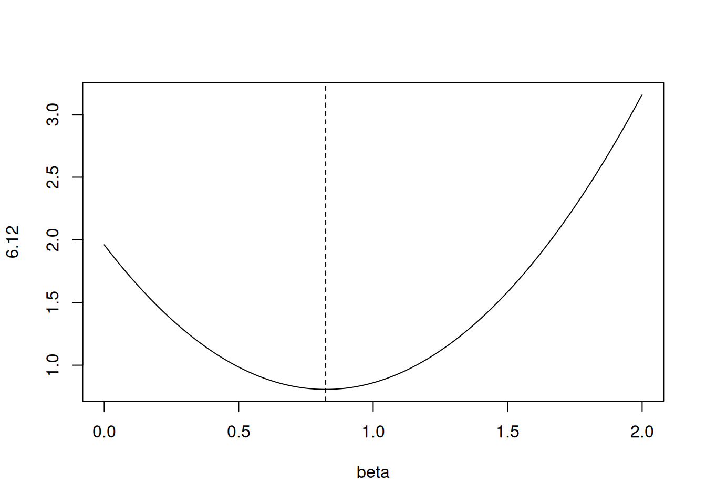
- Consider (6.13) with \(p = 1\). For some choice of \(y_1\) and \(\lambda > 0\), plot (6.13) as a function of \(\beta_1\). Your plot should confirm that (6.13) is solved by (6.15).
Equation 6.13 is:
\[ \sum_{j=1}^p(y_j - \beta_j)^2 + \lambda\sum_{j=1}^p|\beta_j| \]
Equation 6.15 is:
\[ \hat{\beta}_j^L = \begin{cases} y_j - \lambda/2 &\mbox{if } y_j > \lambda/2; \\ y_j + \lambda/2 &\mbox{if } y_j < -\lambda/2; \\ 0 &\mbox{if } |y_j| \le \lambda/2; \end{cases} \]
For \(\lambda = 0.7\) and \(y = 1.4\), the top case applies.
lambda <- 0.7
y <- 1.4
fn <- function(beta) {
(y - beta)^2 + lambda*abs(beta)
}
plot(seq(0, 2, 0.01), fn(seq(0, 2, 0.01)), type = "l", xlab = "beta", ylab = "6.12")
abline(v = y - lambda/2, lty = 2)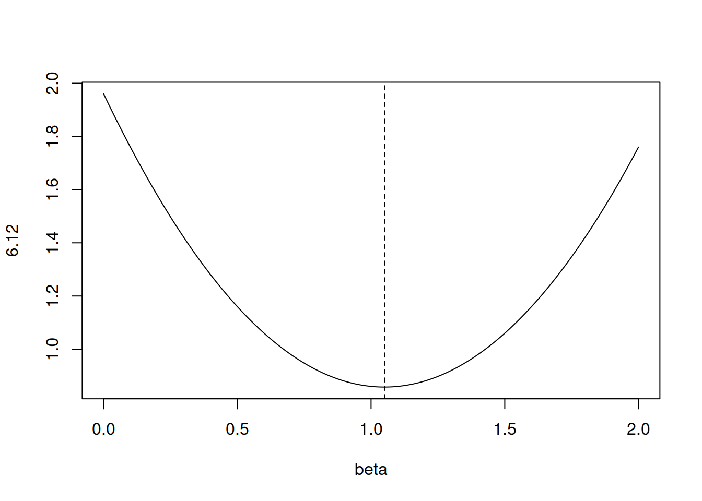
6.1.7 Question 7
We will now derive the Bayesian connection to the lasso and ridge regression discussed in Section 6.2.2.
- Suppose that \(y_i = \beta_0 + \sum_{j=1}^p x_{ij}\beta_j + \epsilon_i\) where \(\epsilon_1, ..., \epsilon_n\) are independent and identically distributed from a \(N(0, \sigma^2)\) distribution. Write out the likelihood for the data.
\[\begin{align*} \mathcal{L} &= \prod_i^n \mathcal{N}(0, \sigma^2) \\ &= \prod_i^n \frac{1}{\sqrt{2\pi\sigma}}\exp\left(-\frac{\epsilon_i^2}{2\sigma^2}\right) \\ &= \left(\frac{1}{\sqrt{2\pi\sigma}}\right)^n \exp\left(-\frac{1}{2\sigma^2} \sum_i^n \epsilon_i^2\right) \end{align*}\]
- Assume the following prior for \(\beta\): \(\beta_1, ..., \beta_p\) are independent and identically distributed according to a double-exponential distribution with mean 0 and common scale parameter b: i.e. \(p(\beta) = \frac{1}{2b}\exp(-|\beta|/b)\). Write out the posterior for \(\beta\) in this setting.
The posterior can be calculated by multiplying the prior and likelihood (up to a proportionality constant).
\[\begin{align*} p(\beta|X,Y) &\propto \left(\frac{1}{\sqrt{2\pi\sigma}}\right)^n \exp\left(-\frac{1}{2\sigma^2} \sum_i^n \epsilon_i^2\right) \prod_j^p\frac{1}{2b}\exp\left(-\frac{|\beta_j|}{b}\right) \\ &\propto \frac{1}{2b} \left(\frac{1}{\sqrt{2\pi\sigma}}\right)^n \exp\left(-\frac{1}{2\sigma^2} \sum_i^n \epsilon_i^2 -\sum_j^p\frac{|\beta_j|}{b}\right) \end{align*}\]
- Argue that the lasso estimate is the mode for \(\beta\) under this posterior distribution.
Let us find the maximum of the posterior distribution (the mode). Maximizing the posterior probability is equivalent to maximizing its log which is:
\[ \log(p(\beta|X,Y)) \propto \log\left[ \frac{1}{2b} \left(\frac{1}{\sqrt{2\pi\sigma}}\right)^n \right ] - \left(\frac{1}{2\sigma^2} \sum_i^n \epsilon_i^2 + \sum_j^p\frac{|\beta_j|}{b}\right) \]
Since, the first term is independent of \(\beta\), our solution will be when we minimize the second term.
\[\begin{align*} \DeclareMathOperator*{\argmin}{arg\,min} % Jan Hlavacek \argmin_\beta \left(\frac{1}{2\sigma^2} \sum_i^n \epsilon_i^2 + \sum_j^p\frac{|\beta|}{b}\right) &= \argmin_\beta \left(\frac{1}{2\sigma^2} \right ) \left( \sum_i^n \epsilon_i^2 +\frac{2\sigma^2}{b}\sum_j^p|\beta_j|\right) \\ &= \argmin_\beta \left( \sum_i^n \epsilon_i^2 +\frac{2\sigma^2}{b}\sum_j^p|\beta_j|\right) \end{align*}\]
Note, that \(RSS = \sum_i^n \epsilon_i^2\) and if we set \(\lambda = \frac{2\sigma^2}{b}\), the mode corresponds to lasso optimization. \[ \argmin_\beta RSS + \lambda\sum_j^p|\beta_j| \]
- Now assume the following prior for \(\beta\): \(\beta_1, ..., \beta_p\) are independent and identically distributed according to a normal distribution with mean zero and variance \(c\). Write out the posterior for \(\beta\) in this setting.
The posterior is now:
\[\begin{align*} p(\beta|X,Y) &\propto \left(\frac{1}{\sqrt{2\pi\sigma}}\right)^n \exp\left(-\frac{1}{2\sigma^2} \sum_i^n \epsilon_i^2\right) \prod_j^p\frac{1}{\sqrt{2\pi c}}\exp\left(-\frac{\beta_j^2}{2c}\right) \\ &\propto \left(\frac{1}{\sqrt{2\pi\sigma}}\right)^n \left(\frac{1}{\sqrt{2\pi c}}\right)^p \exp\left(-\frac{1}{2\sigma^2} \sum_i^n \epsilon_i^2 - \frac{1}{2c}\sum_j^p\beta_j^2\right) \end{align*}\]
- Argue that the ridge regression estimate is both the mode and the mean for \(\beta\) under this posterior distribution.
To show that the ridge estimate is the mode we can again find the maximum by maximizing the log of the posterior. The log is
\[ \log{p(\beta|X,Y)} \propto \log{\left[\left(\frac{1}{\sqrt{2\pi\sigma}}\right)^n \left(\frac{1}{\sqrt{2\pi c}}\right)^p \right ]} - \left(\frac{1}{2\sigma^2} \sum_i^n \epsilon_i^2 + \frac{1}{2c}\sum_j^p\beta_j^2 \right) \]
We can maximize (wrt \(\beta\)) by ignoring the first term and minimizing the second term. i.e. we minimize:
\[ \argmin_\beta \left( \frac{1}{2\sigma^2} \sum_i^n \epsilon_i^2 + \frac{1}{2c}\sum_j^p\beta_j^2 \right)\\ = \argmin_\beta \left( \frac{1}{2\sigma^2} \left( \sum_i^n \epsilon_i^2 + \frac{\sigma^2}{c}\sum_j^p\beta_j^2 \right) \right) \]
As above, if \(RSS = \sum_i^n \epsilon_i^2\) and if we set \(\lambda = \frac{\sigma^2}{c}\), we can see that the mode corresponds to ridge optimization.
6.2 Applied
6.2.1 Question 8
In this exercise, we will generate simulated data, and will then use this data to perform best subset selection.
- Use the
rnorm()function to generate a predictor \(X\) of length \(n = 100\), as well as a noise vector \(\epsilon\) of length \(n = 100\).
- Generate a response vector \(Y\) of length \(n = 100\) according to the model \[Y = \beta_0 + \beta_1X + \beta_2X^2 + \beta_3X^3 + \epsilon,\] where \(\beta_0, \beta_1, \beta_2,\) and \(\beta_3\) are constants of your choice.
- Use the
regsubsets()function to perform best subset selection in order to choose the best model containing the predictors \(X, X^2, ..., X^{10}\). What is the best model obtained according to \(C_p\), BIC, and adjusted \(R^2\)? Show some plots to provide evidence for your answer, and report the coefficients of the best model obtained. Note you will need to use thedata.frame()function to create a single data set containing both \(X\) and \(Y\).
## Subset selection object
## Call: regsubsets.formula(y ~ poly(x, 10, raw = TRUE), data = dat)
## 10 Variables (and intercept)
## Forced in Forced out
## poly(x, 10, raw = TRUE)1 FALSE FALSE
## poly(x, 10, raw = TRUE)2 FALSE FALSE
## poly(x, 10, raw = TRUE)3 FALSE FALSE
## poly(x, 10, raw = TRUE)4 FALSE FALSE
## poly(x, 10, raw = TRUE)5 FALSE FALSE
## poly(x, 10, raw = TRUE)6 FALSE FALSE
## poly(x, 10, raw = TRUE)7 FALSE FALSE
## poly(x, 10, raw = TRUE)8 FALSE FALSE
## poly(x, 10, raw = TRUE)9 FALSE FALSE
## poly(x, 10, raw = TRUE)10 FALSE FALSE
## 1 subsets of each size up to 8
## Selection Algorithm: exhaustive
## poly(x, 10, raw = TRUE)1 poly(x, 10, raw = TRUE)2
## 1 ( 1 ) " " " "
## 2 ( 1 ) "*" "*"
## 3 ( 1 ) "*" "*"
## 4 ( 1 ) "*" "*"
## 5 ( 1 ) "*" "*"
## 6 ( 1 ) "*" "*"
## 7 ( 1 ) "*" "*"
## 8 ( 1 ) "*" "*"
## poly(x, 10, raw = TRUE)3 poly(x, 10, raw = TRUE)4
## 1 ( 1 ) "*" " "
## 2 ( 1 ) " " " "
## 3 ( 1 ) "*" " "
## 4 ( 1 ) "*" " "
## 5 ( 1 ) " " " "
## 6 ( 1 ) " " "*"
## 7 ( 1 ) " " " "
## 8 ( 1 ) "*" " "
## poly(x, 10, raw = TRUE)5 poly(x, 10, raw = TRUE)6
## 1 ( 1 ) " " " "
## 2 ( 1 ) " " " "
## 3 ( 1 ) " " " "
## 4 ( 1 ) "*" " "
## 5 ( 1 ) "*" " "
## 6 ( 1 ) "*" " "
## 7 ( 1 ) "*" "*"
## 8 ( 1 ) "*" "*"
## poly(x, 10, raw = TRUE)7 poly(x, 10, raw = TRUE)8
## 1 ( 1 ) " " " "
## 2 ( 1 ) " " " "
## 3 ( 1 ) " " " "
## 4 ( 1 ) " " " "
## 5 ( 1 ) "*" " "
## 6 ( 1 ) "*" " "
## 7 ( 1 ) "*" "*"
## 8 ( 1 ) "*" "*"
## poly(x, 10, raw = TRUE)9 poly(x, 10, raw = TRUE)10
## 1 ( 1 ) " " " "
## 2 ( 1 ) " " " "
## 3 ( 1 ) " " " "
## 4 ( 1 ) " " " "
## 5 ( 1 ) "*" " "
## 6 ( 1 ) "*" " "
## 7 ( 1 ) "*" " "
## 8 ( 1 ) "*" " "
- Repeat (c), using forward stepwise selection and also using backwards stepwise selection. How does your answer compare to the results in (c)?
## Subset selection object
## Call: regsubsets.formula(y ~ poly(x, 10, raw = TRUE), data = dat, method = "forward")
## 10 Variables (and intercept)
## Forced in Forced out
## poly(x, 10, raw = TRUE)1 FALSE FALSE
## poly(x, 10, raw = TRUE)2 FALSE FALSE
## poly(x, 10, raw = TRUE)3 FALSE FALSE
## poly(x, 10, raw = TRUE)4 FALSE FALSE
## poly(x, 10, raw = TRUE)5 FALSE FALSE
## poly(x, 10, raw = TRUE)6 FALSE FALSE
## poly(x, 10, raw = TRUE)7 FALSE FALSE
## poly(x, 10, raw = TRUE)8 FALSE FALSE
## poly(x, 10, raw = TRUE)9 FALSE FALSE
## poly(x, 10, raw = TRUE)10 FALSE FALSE
## 1 subsets of each size up to 8
## Selection Algorithm: forward
## poly(x, 10, raw = TRUE)1 poly(x, 10, raw = TRUE)2
## 1 ( 1 ) " " " "
## 2 ( 1 ) " " "*"
## 3 ( 1 ) "*" "*"
## 4 ( 1 ) "*" "*"
## 5 ( 1 ) "*" "*"
## 6 ( 1 ) "*" "*"
## 7 ( 1 ) "*" "*"
## 8 ( 1 ) "*" "*"
## poly(x, 10, raw = TRUE)3 poly(x, 10, raw = TRUE)4
## 1 ( 1 ) "*" " "
## 2 ( 1 ) "*" " "
## 3 ( 1 ) "*" " "
## 4 ( 1 ) "*" " "
## 5 ( 1 ) "*" " "
## 6 ( 1 ) "*" " "
## 7 ( 1 ) "*" "*"
## 8 ( 1 ) "*" "*"
## poly(x, 10, raw = TRUE)5 poly(x, 10, raw = TRUE)6
## 1 ( 1 ) " " " "
## 2 ( 1 ) " " " "
## 3 ( 1 ) " " " "
## 4 ( 1 ) "*" " "
## 5 ( 1 ) "*" " "
## 6 ( 1 ) "*" " "
## 7 ( 1 ) "*" " "
## 8 ( 1 ) "*" " "
## poly(x, 10, raw = TRUE)7 poly(x, 10, raw = TRUE)8
## 1 ( 1 ) " " " "
## 2 ( 1 ) " " " "
## 3 ( 1 ) " " " "
## 4 ( 1 ) " " " "
## 5 ( 1 ) " " " "
## 6 ( 1 ) "*" " "
## 7 ( 1 ) "*" " "
## 8 ( 1 ) "*" " "
## poly(x, 10, raw = TRUE)9 poly(x, 10, raw = TRUE)10
## 1 ( 1 ) " " " "
## 2 ( 1 ) " " " "
## 3 ( 1 ) " " " "
## 4 ( 1 ) " " " "
## 5 ( 1 ) "*" " "
## 6 ( 1 ) "*" " "
## 7 ( 1 ) "*" " "
## 8 ( 1 ) "*" "*"## Subset selection object
## Call: regsubsets.formula(y ~ poly(x, 10, raw = TRUE), data = dat, method = "backward")
## 10 Variables (and intercept)
## Forced in Forced out
## poly(x, 10, raw = TRUE)1 FALSE FALSE
## poly(x, 10, raw = TRUE)2 FALSE FALSE
## poly(x, 10, raw = TRUE)3 FALSE FALSE
## poly(x, 10, raw = TRUE)4 FALSE FALSE
## poly(x, 10, raw = TRUE)5 FALSE FALSE
## poly(x, 10, raw = TRUE)6 FALSE FALSE
## poly(x, 10, raw = TRUE)7 FALSE FALSE
## poly(x, 10, raw = TRUE)8 FALSE FALSE
## poly(x, 10, raw = TRUE)9 FALSE FALSE
## poly(x, 10, raw = TRUE)10 FALSE FALSE
## 1 subsets of each size up to 8
## Selection Algorithm: backward
## poly(x, 10, raw = TRUE)1 poly(x, 10, raw = TRUE)2
## 1 ( 1 ) "*" " "
## 2 ( 1 ) "*" "*"
## 3 ( 1 ) "*" "*"
## 4 ( 1 ) "*" "*"
## 5 ( 1 ) "*" "*"
## 6 ( 1 ) "*" "*"
## 7 ( 1 ) "*" "*"
## 8 ( 1 ) "*" "*"
## poly(x, 10, raw = TRUE)3 poly(x, 10, raw = TRUE)4
## 1 ( 1 ) " " " "
## 2 ( 1 ) " " " "
## 3 ( 1 ) " " " "
## 4 ( 1 ) " " " "
## 5 ( 1 ) " " " "
## 6 ( 1 ) " " " "
## 7 ( 1 ) " " " "
## 8 ( 1 ) " " " "
## poly(x, 10, raw = TRUE)5 poly(x, 10, raw = TRUE)6
## 1 ( 1 ) " " " "
## 2 ( 1 ) " " " "
## 3 ( 1 ) "*" " "
## 4 ( 1 ) "*" " "
## 5 ( 1 ) "*" " "
## 6 ( 1 ) "*" "*"
## 7 ( 1 ) "*" "*"
## 8 ( 1 ) "*" "*"
## poly(x, 10, raw = TRUE)7 poly(x, 10, raw = TRUE)8
## 1 ( 1 ) " " " "
## 2 ( 1 ) " " " "
## 3 ( 1 ) " " " "
## 4 ( 1 ) "*" " "
## 5 ( 1 ) "*" " "
## 6 ( 1 ) "*" " "
## 7 ( 1 ) "*" "*"
## 8 ( 1 ) "*" "*"
## poly(x, 10, raw = TRUE)9 poly(x, 10, raw = TRUE)10
## 1 ( 1 ) " " " "
## 2 ( 1 ) " " " "
## 3 ( 1 ) " " " "
## 4 ( 1 ) " " " "
## 5 ( 1 ) "*" " "
## 6 ( 1 ) "*" " "
## 7 ( 1 ) "*" " "
## 8 ( 1 ) "*" "*"
- Now fit a lasso model to the simulated data, again using \(X, X^2, ..., X^{10}\) as predictors. Use cross-validation to select the optimal value of \(\lambda\). Create plots of the cross-validation error as a function of \(\lambda\). Report the resulting coefficient estimates, and discuss the results obtained.
## [1] 0.09804219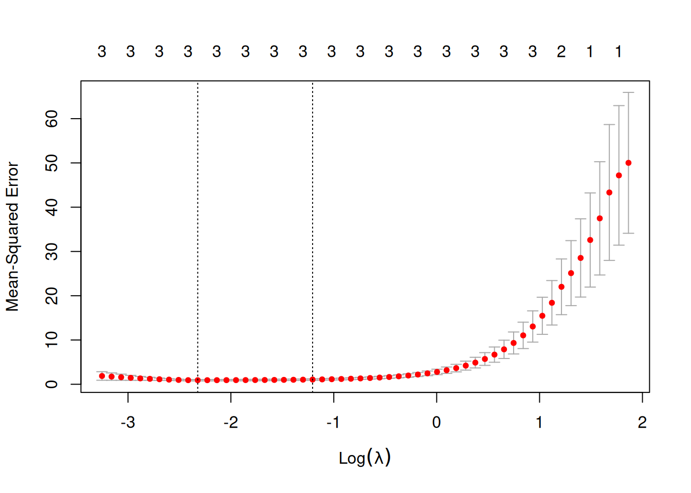
out = glmnet(poly(dat$x, 10, raw = TRUE), dat$y, alpha = 1, lambda = res$lambda.min)
predict(out, type = "coefficients", s = best)## 11 x 1 sparse Matrix of class "dgCMatrix"
## s1
## (Intercept) 1.8457308
## 1 2.9092918
## 2 -1.9287428
## 3 0.5161012
## 4 .
## 5 .
## 6 .
## 7 .
## 8 .
## 9 .
## 10 .When fitting lasso, the model that minimizes MSE uses three predictors (as per the simulation). The coefficients estimated (2.9, -1.9 and 0.5) are similar to those used in the simulation.
- Now generate a response vector \(Y\) according to the model \[Y = \beta_0 + \beta_7X^7 + \epsilon,\] and perform best subset selection and the lasso. Discuss the results obtained.
## Subset selection object
## Call: regsubsets.formula(y ~ poly(x, 10, raw = TRUE), data = dat)
## 10 Variables (and intercept)
## Forced in Forced out
## poly(x, 10, raw = TRUE)1 FALSE FALSE
## poly(x, 10, raw = TRUE)2 FALSE FALSE
## poly(x, 10, raw = TRUE)3 FALSE FALSE
## poly(x, 10, raw = TRUE)4 FALSE FALSE
## poly(x, 10, raw = TRUE)5 FALSE FALSE
## poly(x, 10, raw = TRUE)6 FALSE FALSE
## poly(x, 10, raw = TRUE)7 FALSE FALSE
## poly(x, 10, raw = TRUE)8 FALSE FALSE
## poly(x, 10, raw = TRUE)9 FALSE FALSE
## poly(x, 10, raw = TRUE)10 FALSE FALSE
## 1 subsets of each size up to 8
## Selection Algorithm: exhaustive
## poly(x, 10, raw = TRUE)1 poly(x, 10, raw = TRUE)2
## 1 ( 1 ) " " " "
## 2 ( 1 ) " " "*"
## 3 ( 1 ) " " "*"
## 4 ( 1 ) " " "*"
## 5 ( 1 ) " " "*"
## 6 ( 1 ) " " "*"
## 7 ( 1 ) " " "*"
## 8 ( 1 ) " " "*"
## poly(x, 10, raw = TRUE)3 poly(x, 10, raw = TRUE)4
## 1 ( 1 ) " " " "
## 2 ( 1 ) " " " "
## 3 ( 1 ) "*" " "
## 4 ( 1 ) "*" " "
## 5 ( 1 ) "*" "*"
## 6 ( 1 ) "*" " "
## 7 ( 1 ) "*" " "
## 8 ( 1 ) "*" "*"
## poly(x, 10, raw = TRUE)5 poly(x, 10, raw = TRUE)6
## 1 ( 1 ) " " " "
## 2 ( 1 ) " " " "
## 3 ( 1 ) " " " "
## 4 ( 1 ) "*" " "
## 5 ( 1 ) "*" " "
## 6 ( 1 ) "*" "*"
## 7 ( 1 ) "*" "*"
## 8 ( 1 ) "*" "*"
## poly(x, 10, raw = TRUE)7 poly(x, 10, raw = TRUE)8
## 1 ( 1 ) "*" " "
## 2 ( 1 ) "*" " "
## 3 ( 1 ) "*" " "
## 4 ( 1 ) " " " "
## 5 ( 1 ) " " " "
## 6 ( 1 ) " " "*"
## 7 ( 1 ) " " "*"
## 8 ( 1 ) " " "*"
## poly(x, 10, raw = TRUE)9 poly(x, 10, raw = TRUE)10
## 1 ( 1 ) " " " "
## 2 ( 1 ) " " " "
## 3 ( 1 ) " " " "
## 4 ( 1 ) "*" " "
## 5 ( 1 ) "*" " "
## 6 ( 1 ) "*" " "
## 7 ( 1 ) "*" "*"
## 8 ( 1 ) "*" "*"## [1] 1.126906
out = glmnet(poly(dat$x, 10, raw = TRUE), dat$y, alpha = 1, lambda = best)
predict(out, type = "coefficients", s = best)## 11 x 1 sparse Matrix of class "dgCMatrix"
## s1
## (Intercept) 1.061389580
## 1 .
## 2 -0.883080980
## 3 .
## 4 -0.121018425
## 5 0.028984084
## 6 -0.009540039
## 7 0.188796928
## 8 .
## 9 .
## 10 .When fitting lasso, the model does not perfectly replicate the simulation (coefficients are retained for powers of \(x\) that were not simulated).
6.2.2 Question 9
In this exercise, we will predict the number of applications received using the other variables in the
Collegedata set.
- Split the data set into a training set and a test set.
set.seed(42)
train <- sample(nrow(College), nrow(College)*2/3)
test <- setdiff(seq_len(nrow(College)), train)
mse <- list()
- Fit a linear model using least squares on the training set, and report the test error obtained.
fit <- lm(Apps ~ ., data = College[train, ])
(mse$lm <- mean((predict(fit, College[test, ]) - College$Apps[test]) ^ 2))## [1] 1695269
- Fit a ridge regression model on the training set, with \(\lambda\) chosen by cross-validation. Report the test error obtained.
mm <- model.matrix(Apps ~ ., data = College[train, ])
fit2 <- cv.glmnet(mm, College$Apps[train], alpha = 0)
p <- predict(fit2, model.matrix(Apps ~ ., data = College[test, ]), s = fit2$lambda.min)
(mse$ridge <- mean((p - College$Apps[test]) ^ 2))## [1] 2804369
- Fit a lasso model on the training set, with \(\lambda\) chosen by cross- validation. Report the test error obtained, along with the number of non-zero coefficient estimates.
mm <- model.matrix(Apps ~ ., data = College[train, ])
fit3 <- cv.glmnet(mm, College$Apps[train], alpha = 1)
p <- predict(fit3, model.matrix(Apps ~ ., data = College[test, ]), s = fit3$lambda.min)
(mse$lasso <- mean((p - College$Apps[test]) ^ 2))## [1] 1822322
- Fit a PCR model on the training set, with \(M\) chosen by cross-validation. Report the test error obtained, along with the value of \(M\) selected by cross-validation.
fit4 <- pcr(Apps ~ ., data = College[train, ], scale = TRUE, validation = "CV")
validationplot(fit4, val.type = "MSEP")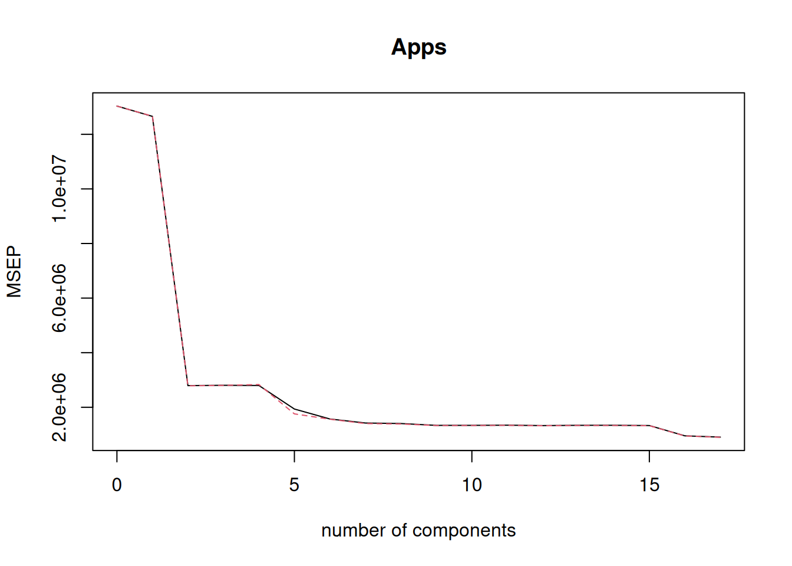
## [1] 1695269
- Fit a PLS model on the training set, with \(M\) chosen by cross-validation. Report the test error obtained, along with the value of \(M\) selected by cross-validation.
fit5 <- plsr(Apps ~ ., data = College[train, ], scale = TRUE, validation = "CV")
validationplot(fit5, val.type = "MSEP")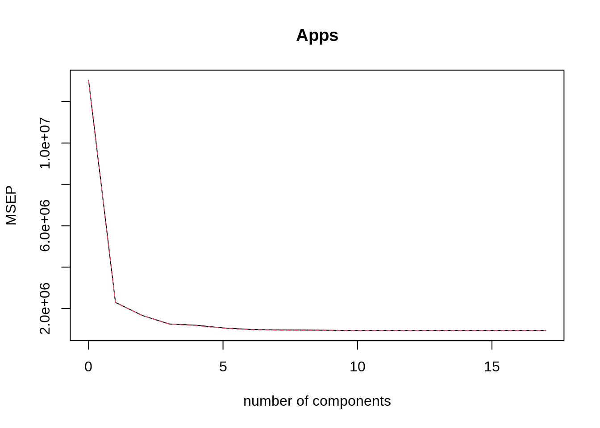
## [1] 1696902
- Comment on the results obtained. How accurately can we predict the number of college applications received? Is there much difference among the test errors resulting from these five approaches?
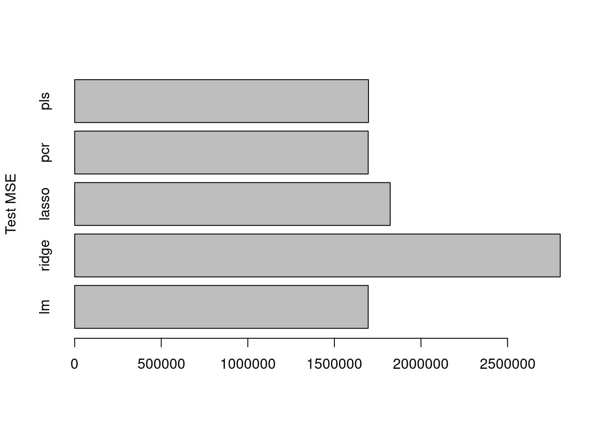
Ridge and lasso give the lowest test errors but the lowest is generated by the ridge regression model (in this specific case with this specific seed).
6.2.3 Question 10
We have seen that as the number of features used in a model increases, the training error will necessarily decrease, but the test error may not. We will now explore this in a simulated data set.
- Generate a data set with \(p = 20\) features, \(n = 1,000\) observations, and an associated quantitative response vector generated according to the model \(Y =X\beta + \epsilon\), where \(\beta\) has some elements that are exactly equal to zero.
set.seed(42)
dat <- matrix(rnorm(1000*20), nrow = 1000)
colnames(dat) <- paste0("b", 1:20)
beta <- rep(0, 20)
beta[1:4] <- c(5, 4, 2, 7)
y <- colSums((t(dat) * beta)) + rnorm(1000)
dat <- data.frame(dat)
dat$y <- y
- Split your data set into a training set containing 100 observations and a test set containing 900 observations.
- Perform best subset selection on the training set, and plot the training set MSE associated with the best model of each size.
## Subset selection object
## Call: regsubsets.formula(y ~ ., data = train, nvmax = 20)
## 20 Variables (and intercept)
## Forced in Forced out
## b1 FALSE FALSE
## b2 FALSE FALSE
## b3 FALSE FALSE
## b4 FALSE FALSE
## b5 FALSE FALSE
## b6 FALSE FALSE
## b7 FALSE FALSE
## b8 FALSE FALSE
## b9 FALSE FALSE
## b10 FALSE FALSE
## b11 FALSE FALSE
## b12 FALSE FALSE
## b13 FALSE FALSE
## b14 FALSE FALSE
## b15 FALSE FALSE
## b16 FALSE FALSE
## b17 FALSE FALSE
## b18 FALSE FALSE
## b19 FALSE FALSE
## b20 FALSE FALSE
## 1 subsets of each size up to 20
## Selection Algorithm: exhaustive
## b1 b2 b3 b4 b5 b6 b7 b8 b9 b10 b11 b12 b13 b14 b15 b16 b17
## 1 ( 1 ) " " " " " " "*" " " " " " " " " " " " " " " " " " " " " " " " " " "
## 2 ( 1 ) "*" " " " " "*" " " " " " " " " " " " " " " " " " " " " " " " " " "
## 3 ( 1 ) "*" "*" " " "*" " " " " " " " " " " " " " " " " " " " " " " " " " "
## 4 ( 1 ) "*" "*" "*" "*" " " " " " " " " " " " " " " " " " " " " " " " " " "
## 5 ( 1 ) "*" "*" "*" "*" " " " " " " "*" " " " " " " " " " " " " " " " " " "
## 6 ( 1 ) "*" "*" "*" "*" " " " " " " "*" " " " " " " " " " " " " " " " " "*"
## 7 ( 1 ) "*" "*" "*" "*" " " " " " " "*" " " " " "*" " " " " " " " " " " "*"
## 8 ( 1 ) "*" "*" "*" "*" " " " " " " "*" " " " " "*" " " " " " " " " "*" "*"
## 9 ( 1 ) "*" "*" "*" "*" "*" " " " " "*" " " " " "*" " " " " " " " " "*" "*"
## 10 ( 1 ) "*" "*" "*" "*" "*" " " " " "*" " " " " "*" " " " " " " " " "*" "*"
## 11 ( 1 ) "*" "*" "*" "*" "*" " " " " "*" " " " " "*" "*" " " " " " " "*" "*"
## 12 ( 1 ) "*" "*" "*" "*" "*" " " " " "*" " " " " "*" "*" " " " " " " "*" "*"
## 13 ( 1 ) "*" "*" "*" "*" "*" " " " " "*" " " " " "*" "*" " " "*" " " "*" "*"
## 14 ( 1 ) "*" "*" "*" "*" "*" " " " " "*" " " " " "*" "*" " " "*" "*" "*" "*"
## 15 ( 1 ) "*" "*" "*" "*" "*" "*" " " "*" " " " " "*" "*" " " "*" "*" "*" "*"
## 16 ( 1 ) "*" "*" "*" "*" "*" "*" " " "*" " " " " "*" "*" " " "*" "*" "*" "*"
## 17 ( 1 ) "*" "*" "*" "*" "*" "*" " " "*" "*" " " "*" "*" " " "*" "*" "*" "*"
## 18 ( 1 ) "*" "*" "*" "*" "*" "*" "*" "*" "*" " " "*" "*" " " "*" "*" "*" "*"
## 19 ( 1 ) "*" "*" "*" "*" "*" "*" "*" "*" "*" " " "*" "*" "*" "*" "*" "*" "*"
## 20 ( 1 ) "*" "*" "*" "*" "*" "*" "*" "*" "*" "*" "*" "*" "*" "*" "*" "*" "*"
## b18 b19 b20
## 1 ( 1 ) " " " " " "
## 2 ( 1 ) " " " " " "
## 3 ( 1 ) " " " " " "
## 4 ( 1 ) " " " " " "
## 5 ( 1 ) " " " " " "
## 6 ( 1 ) " " " " " "
## 7 ( 1 ) " " " " " "
## 8 ( 1 ) " " " " " "
## 9 ( 1 ) " " " " " "
## 10 ( 1 ) " " " " "*"
## 11 ( 1 ) " " " " "*"
## 12 ( 1 ) "*" " " "*"
## 13 ( 1 ) "*" " " "*"
## 14 ( 1 ) "*" " " "*"
## 15 ( 1 ) "*" " " "*"
## 16 ( 1 ) "*" "*" "*"
## 17 ( 1 ) "*" "*" "*"
## 18 ( 1 ) "*" "*" "*"
## 19 ( 1 ) "*" "*" "*"
## 20 ( 1 ) "*" "*" "*"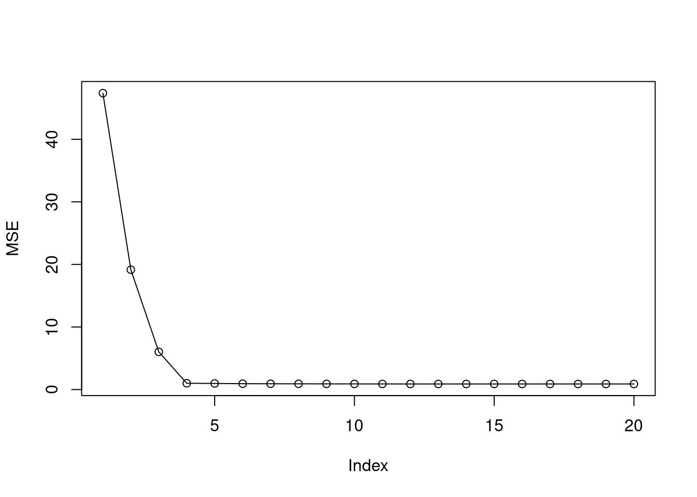
- Plot the test set MSE associated with the best model of each size.
predict.regsubsets <- function (object, newdata, id, ...) {
form <- as.formula (object$call[[2]])
mat <- model.matrix (form , newdata)
coefi <- coef(object, id = id)
xvars <- names(coefi)
mat[ ,xvars] %*% coefi
}
mse <- sapply(1:20, function(i) mean((test$y - predict(fit, test, i))^2))
plot(mse, ylab = "MSE", type = "o", pch = 19)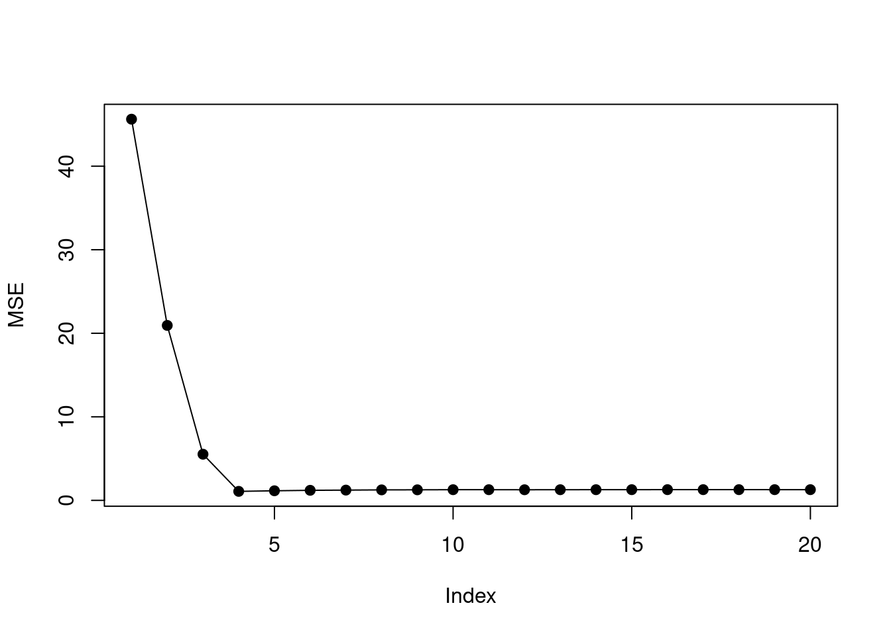
- For which model size does the test set MSE take on its minimum value? Comment on your results. If it takes on its minimum value for a model containing only an intercept or a model containing all of the features, then play around with the way that you are generating the data in (a) until you come up with a scenario in which the test set MSE is minimized for an intermediate model size.
## [1] 4The min test MSE is found when model size is 4. This corresponds to the simulated data which has four non-zero coefficients.
set.seed(42)
dat <- matrix(rnorm(1000*20), nrow = 1000)
colnames(dat) <- paste0("b", 1:20)
beta <- rep(0, 20)
beta[1:9] <- c(5, 4, 2, 7, 0.01, 0.001, 0.05, 0.1, 0.5)
y <- colSums((t(dat) * beta)) + rnorm(1000)
dat <- data.frame(dat)
dat$y <- y
train <- dat[1:100, ]
test <- dat[101:1000, ]
fit <- regsubsets(y ~ ., data = train, nvmax = 20)
summary(fit)## Subset selection object
## Call: regsubsets.formula(y ~ ., data = train, nvmax = 20)
## 20 Variables (and intercept)
## Forced in Forced out
## b1 FALSE FALSE
## b2 FALSE FALSE
## b3 FALSE FALSE
## b4 FALSE FALSE
## b5 FALSE FALSE
## b6 FALSE FALSE
## b7 FALSE FALSE
## b8 FALSE FALSE
## b9 FALSE FALSE
## b10 FALSE FALSE
## b11 FALSE FALSE
## b12 FALSE FALSE
## b13 FALSE FALSE
## b14 FALSE FALSE
## b15 FALSE FALSE
## b16 FALSE FALSE
## b17 FALSE FALSE
## b18 FALSE FALSE
## b19 FALSE FALSE
## b20 FALSE FALSE
## 1 subsets of each size up to 20
## Selection Algorithm: exhaustive
## b1 b2 b3 b4 b5 b6 b7 b8 b9 b10 b11 b12 b13 b14 b15 b16 b17
## 1 ( 1 ) " " " " " " "*" " " " " " " " " " " " " " " " " " " " " " " " " " "
## 2 ( 1 ) "*" " " " " "*" " " " " " " " " " " " " " " " " " " " " " " " " " "
## 3 ( 1 ) "*" "*" " " "*" " " " " " " " " " " " " " " " " " " " " " " " " " "
## 4 ( 1 ) "*" "*" "*" "*" " " " " " " " " " " " " " " " " " " " " " " " " " "
## 5 ( 1 ) "*" "*" "*" "*" " " " " " " " " "*" " " " " " " " " " " " " " " " "
## 6 ( 1 ) "*" "*" "*" "*" " " " " " " " " "*" " " " " " " " " " " " " " " "*"
## 7 ( 1 ) "*" "*" "*" "*" " " " " " " "*" "*" " " " " " " " " " " " " " " "*"
## 8 ( 1 ) "*" "*" "*" "*" " " " " " " "*" "*" " " "*" " " " " " " " " " " "*"
## 9 ( 1 ) "*" "*" "*" "*" " " " " " " "*" "*" " " "*" " " " " " " " " "*" "*"
## 10 ( 1 ) "*" "*" "*" "*" "*" " " " " "*" "*" " " "*" " " " " " " " " "*" "*"
## 11 ( 1 ) "*" "*" "*" "*" "*" " " " " "*" "*" " " "*" " " " " " " " " "*" "*"
## 12 ( 1 ) "*" "*" "*" "*" "*" " " " " "*" "*" " " "*" "*" " " " " " " "*" "*"
## 13 ( 1 ) "*" "*" "*" "*" "*" " " " " "*" "*" " " "*" "*" " " " " " " "*" "*"
## 14 ( 1 ) "*" "*" "*" "*" "*" " " "*" "*" "*" " " "*" "*" " " " " " " "*" "*"
## 15 ( 1 ) "*" "*" "*" "*" "*" " " "*" "*" "*" " " "*" "*" " " "*" " " "*" "*"
## 16 ( 1 ) "*" "*" "*" "*" "*" " " "*" "*" "*" " " "*" "*" " " "*" "*" "*" "*"
## 17 ( 1 ) "*" "*" "*" "*" "*" "*" "*" "*" "*" " " "*" "*" " " "*" "*" "*" "*"
## 18 ( 1 ) "*" "*" "*" "*" "*" "*" "*" "*" "*" " " "*" "*" " " "*" "*" "*" "*"
## 19 ( 1 ) "*" "*" "*" "*" "*" "*" "*" "*" "*" " " "*" "*" "*" "*" "*" "*" "*"
## 20 ( 1 ) "*" "*" "*" "*" "*" "*" "*" "*" "*" "*" "*" "*" "*" "*" "*" "*" "*"
## b18 b19 b20
## 1 ( 1 ) " " " " " "
## 2 ( 1 ) " " " " " "
## 3 ( 1 ) " " " " " "
## 4 ( 1 ) " " " " " "
## 5 ( 1 ) " " " " " "
## 6 ( 1 ) " " " " " "
## 7 ( 1 ) " " " " " "
## 8 ( 1 ) " " " " " "
## 9 ( 1 ) " " " " " "
## 10 ( 1 ) " " " " " "
## 11 ( 1 ) " " " " "*"
## 12 ( 1 ) " " " " "*"
## 13 ( 1 ) "*" " " "*"
## 14 ( 1 ) "*" " " "*"
## 15 ( 1 ) "*" " " "*"
## 16 ( 1 ) "*" " " "*"
## 17 ( 1 ) "*" " " "*"
## 18 ( 1 ) "*" "*" "*"
## 19 ( 1 ) "*" "*" "*"
## 20 ( 1 ) "*" "*" "*"mse <- sapply(1:20, function(i) mean((test$y - predict(fit, test, i))^2))
plot(mse, ylab = "MSE", type = "o", pch = 19)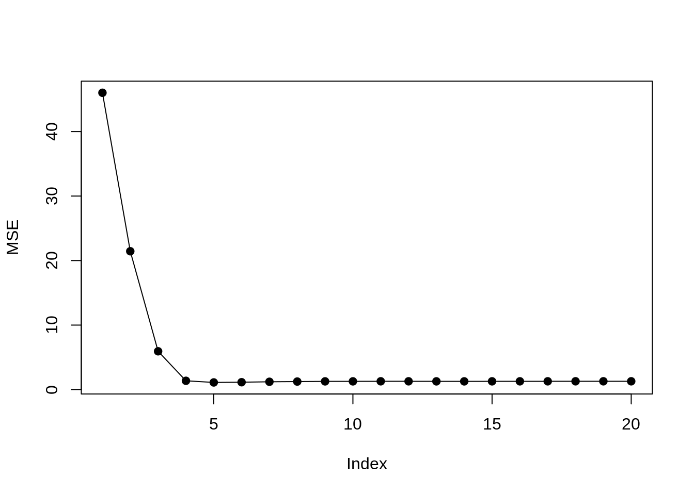
## [1] 5
- How does the model at which the test set MSE is minimized compare to the true model used to generate the data? Comment on the coefficient values.
The min test MSE is found when model size is 5 but there are 9 non-zero coefficients.
## (Intercept) b1 b2 b3 b4 b9
## 0.03507654 5.06180121 3.82785027 2.20434996 7.05312844 0.57032008The coefficient values are well estimated when high, but the smaller coefficients are dropped.
- Create a plot displaying \(\sqrt{\sum_{j=1}^p (\beta_j - \hat{\beta}{}_j^r)^2}\) for a range of values of \(r\), where \(\hat{\beta}{}_j^r\) is the \(j\)th coefficient estimate for the best model containing \(r\) coefficients. Comment on what you observe. How does this compare to the test MSE plot from (d)?
names(beta) <- paste0("b", 1:20)
b <- data.frame(id = names(beta), b = beta)
out <- sapply(1:20, function(i) {
c <- coef(fit, id = i)[-1]
c <- data.frame(id = names(c), c = c)
m <- merge(b, c)
sqrt(sum((m$b - m$c)^2))
})
plot(out, ylab = "Mean squared coefficient error", type = "o", pch = 19)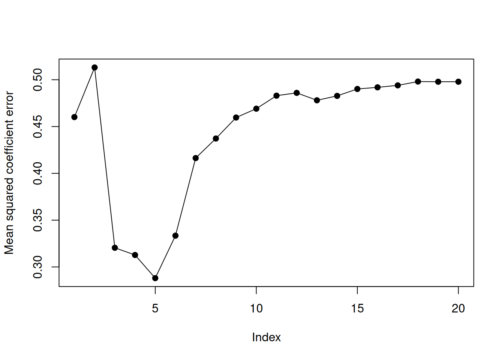
The error of the coefficient estimates is minimized when model size is 5. This corresponds to the point when test MSE was minimized.
6.2.4 Question 11
We will now try to predict per capita crime rate in the
Bostondata set.
- Try out some of the regression methods explored in this chapter, such as best subset selection, the lasso, ridge regression, and PCR. Present and discuss results for the approaches that you consider.
set.seed(1)
train <- sample(nrow(Boston), nrow(Boston)*2/3)
test <- setdiff(seq_len(nrow(Boston)), train)
hist(log(Boston$crim))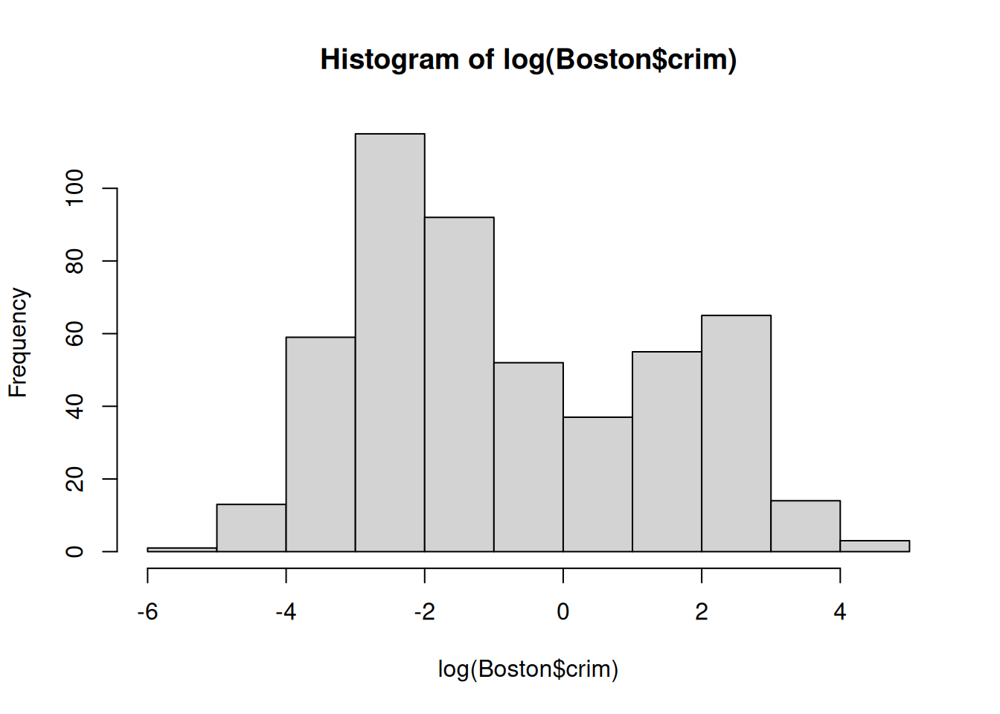
- Propose a model (or set of models) that seem to perform well on this data set, and justify your answer. Make sure that you are evaluating model performance using validation set error, cross-validation, or some other reasonable alternative, as opposed to using training error.
We will try to fit models to log(Boston$crim) which is closer to a normal
distribution.
fit <- lm(log(crim) ~ ., data = Boston[train, ])
mean((predict(fit, Boston[test, ]) - log(Boston$crim[test])) ^ 2)## [1] 0.66578mm <- model.matrix(log(crim) ~ ., data = Boston[train, ])
fit2 <- cv.glmnet(mm, log(Boston$crim[train]), alpha = 0)
p <- predict(fit2, model.matrix(log(crim) ~ ., data = Boston[test, ]), s = fit2$lambda.min)
mean((p - log(Boston$crim[test])) ^ 2)## [1] 0.6511807mm <- model.matrix(log(crim) ~ ., data = Boston[train, ])
fit3 <- cv.glmnet(mm, log(Boston$crim[train]), alpha = 1)
p <- predict(fit3, model.matrix(log(crim) ~ ., data = Boston[test, ]), s = fit3$lambda.min)
mean((p - log(Boston$crim[test])) ^ 2)## [1] 0.6494337fit4 <- pcr(log(crim) ~ ., data = Boston[train, ], scale = TRUE, validation = "CV")
validationplot(fit4, val.type = "MSEP")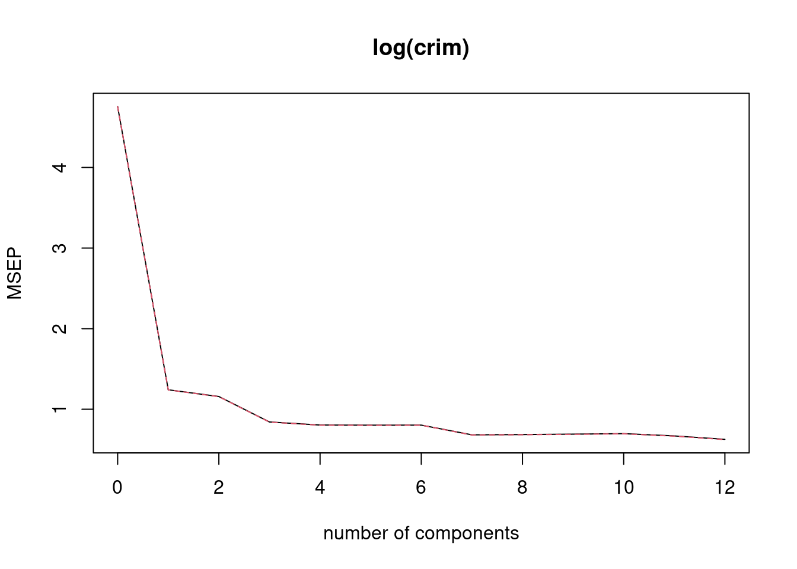
## [1] 0.6561043fit5 <- plsr(log(crim) ~ ., data = Boston[train, ], scale = TRUE, validation = "CV")
validationplot(fit5, val.type = "MSEP")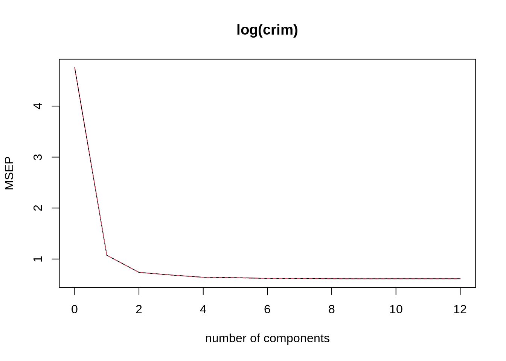
## [1] 0.6773353In this case lasso (alpha = 1) seems to perform very slightly better than
un-penalized regression. Some coefficients have been dropped:
## 14 x 1 sparse Matrix of class "dgCMatrix"
## s1
## (Intercept) -4.713172675
## (Intercept) .
## zn -0.011043739
## indus 0.022515402
## chas .
## nox 3.856157215
## rm .
## age 0.004210529
## dis .
## rad 0.145604750
## tax .
## ptratio -0.031787696
## lstat 0.036112321
## medv 0.004304181
- Does your chosen model involve all of the features in the data set? Why or why not?
Not all features are included due to the lasso penalization.